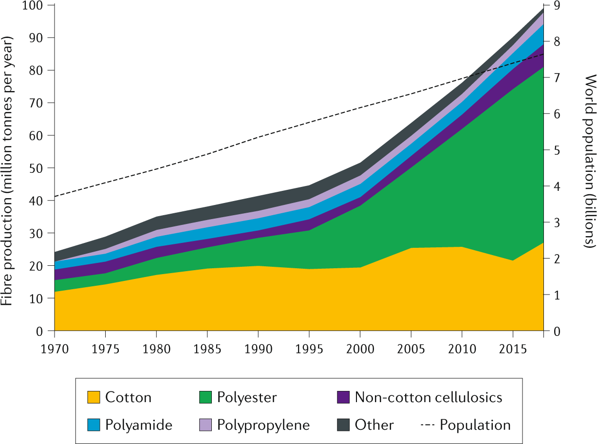
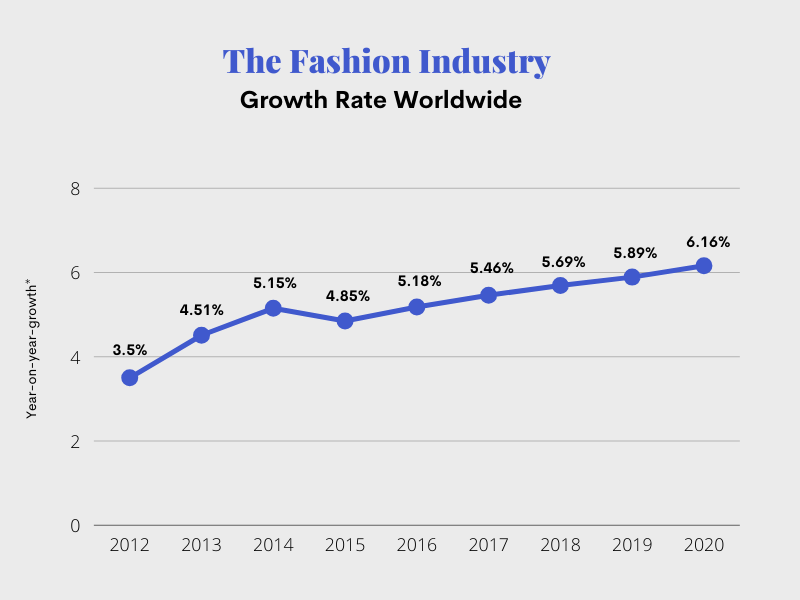
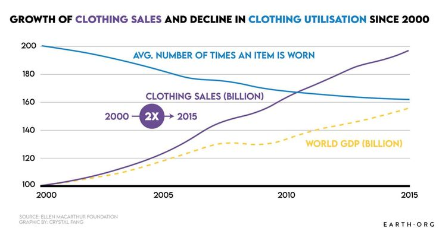
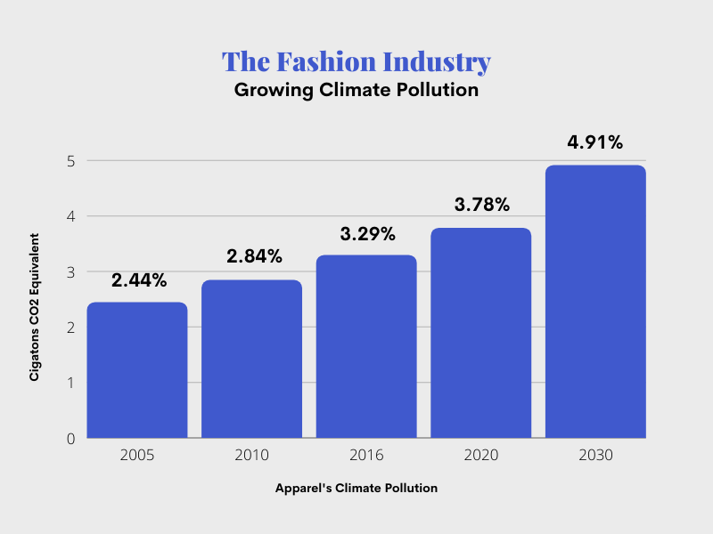
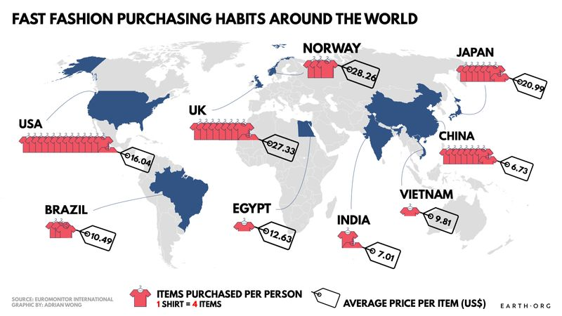

Below are some graphs showing a wide range of data proving the negatives of fast fashion. These include amount of fabric produced per year, overall fashion industry growth, and clothing sales vs clothing actually worn.
The graph above shows the amount of fiber production produced each year. As you can see it has had a great increase from the years 1970 to 2015.
The graph above shows how the fashion industry has grown over years.
The graph above shows how clothing sales have increased overtime and how the usage of the clothing has simultaneously dicreased.
The graph above shows how the fashion industry has gradually increased its affects of pollution in the enviornment over the past 20 years.
The graph above shows the spending habits of fast fashion around the world.